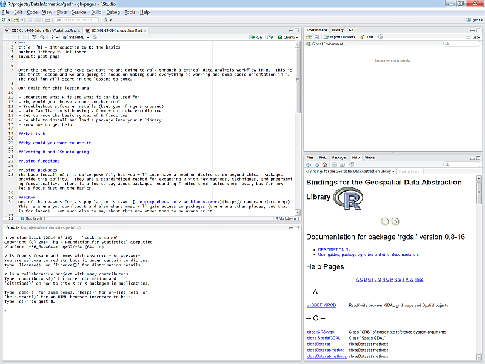

R Basics
Get the lesson R script: R_Basics.R
Get the lesson data: download zip
Lesson Outline
Lesson Exercises
Goals and Motivation
R is a language for statistical computing as well as a general purpose programming language. Increasingly, it has become one of the primary languages used in data science and for data analysis across many of the natural sciences.
The goals of this training are to expose you to fundamentals and to develop an appreciation of what’s possible with this software. We also provide resources that you can use for follow-up learning on your own. You should be able to answer these questions at the end of this session:
- What is R and why should I use it?
- Why would I use RStudio?
- How can I write, save, and run scripts in RStudio?
- Where can I go for help?
- What are the basic data structures in R?
- How do I import data?
Why should I invest time in R?
There are many programming languages available and each has it’s specific benefits. R was originally created as a statistical programming language but now it is largely viewed as a ‘data science’ language. Why would you invest time in learning R compared to other languages?
- The growth of R as explained in the Stack Overflow blog, IEEE rating
R is also an open-source programming language - not only is it free, but this means anybody can contribute to it’s development. As of 2021-02-16, there are 17071 supplemental packages for R on CRAN!
RStudio
In the old days, the only way to use R was directly from the Console - this is a bare bones way of running R only with direct input of commands. Now, RStudio is the go-to Interactive Development Environment (IDE) for R. Think of it like a car that is built around an engine. It is integrated with the console (engine) and includes many other features to improve the user’s experience, such as version control, debugging, dynamic documents, package manager and creation, and code highlighting and completion.
Let’s get familiar with RStudio before we go on.
Open R and RStudio
If you haven’t done so, download and install RStudio from the link above. After it’s installed, find the RStudio shortcut and fire it up (just watch for now). You should see something like this:

There are four panes in RStudio:
- Source: Your primary window for writing code to send to the console, this is where you write and save R “scripts”
- Console: This is where code is executed in R - you should almost never write code here.
- Environment, History, etc.: A tabbed window showing your working environment, code execution history, and other useful things
- Files, plots, etc.: A tabbed window showing a file explorer, a plot window, list of installed packages, help files, and viewer
Scripting
In most cases, you will not enter and execute code directly in the console. Code can be written in a script and then sent directly to the console when you’re ready to run it. The key difference here is that a script can be saved and shared.
Open a new script from the File menu…

Executing code in RStudio
After you write code in your script, it can be sent to the Console to run the code in R. Anything you write in the script will not be run or saved in R until it is sent to the console. There are two ways to do this. First, you can hit the Run button at the top right of the scripting window. Second, you can use ctrl+enter (cmd+enter on a Mac). Both approaches will send the selected line to the console, then move to the next line in your script. You can also highlight and send an entire block of code.

Exercise 1
This exercise will make sure R and RStudio are working and that you can get around the basics in RStudio.
Start RStudio if using a version you installed OR navigate to https://rstudio.cloud/project/1318333 if using RStudio Cloud. To start both R and RStudio requires only firing up RStudio. RStudio should be available from All Programs at the Start Menu. Fire up RStudio.
If you’re not using RStudio Cloud, create a new project (File menu, New project, New directory, New project, Directory Name…). Name it “r_workshop”. We will use this for the rest of the workshop.
Create a new “R Script” in the Source Pane, save that file into your newly created project and name it “first_script.R”. It’ll just be a blank text file at this point.
Add in a comment line to separate this section. It should look something like:
# Exercise 1: Just Getting used to RStudio and Scripts.Lastly, we need to get this project set up with some example data for our exercises (if you’re using RStudio Cloud, ignore this step). You should have downloaded this already, but if not, the data are available here. The data are in a zipped folder. Download the file to your computer (anywhere). Create a folder in your new project named
dataand extract the files into this location.
R language fundamentals
R is built around functions. These are commands that do specific things based on what you provide. The basic syntax of a function follows the form: function_name(arg1, arg2, ...).
With the base install, you will gain access to many functions (3621, to be exact). Some examples:
# print
print('hello world!')## [1] "hello world!"# sequence
seq(1, 10)## [1] 1 2 3 4 5 6 7 8 9 10# random numbers
rnorm(100, mean = 10, sd = 2)## [1] 14.010108 9.159137 7.260594 9.931887 12.015981 10.476299 12.867205
## [8] 8.139937 13.621472 8.854850 7.967475 8.479153 12.780916 9.283060
## [15] 10.396728 8.978496 9.142176 10.178565 3.568091 10.449536 9.257575
## [22] 11.397986 8.255962 11.265979 9.059755 9.167191 11.196989 8.787975
## [29] 9.172519 9.591682 8.275901 7.828717 11.021712 9.909530 9.686146
## [36] 12.159365 8.118450 13.501772 8.710850 10.176179 10.177775 9.862844
## [43] 8.516324 12.883751 9.872852 9.975269 7.868568 12.486066 9.811265
## [50] 9.001293 13.568564 9.685883 12.553167 8.312973 9.451399 8.891456
## [57] 10.452662 12.015534 7.359101 11.602581 9.511293 12.932358 10.103009
## [64] 13.575419 9.352993 12.647109 11.650379 7.289745 13.074741 13.504557
## [71] 10.222703 13.556053 9.566511 11.070270 11.129732 9.143215 13.108901
## [78] 12.493222 6.678940 9.173427 11.149667 12.608744 8.274928 7.382202
## [85] 8.647703 9.518019 9.944423 13.125399 13.073436 11.296658 5.892959
## [92] 6.046611 8.435462 6.254305 9.439310 8.777585 12.248227 9.121307
## [99] 11.002818 10.714311# average
mean(rnorm(100))## [1] -0.0471849# sum
sum(rnorm(100))## [1] 13.05941Very often you will see functions used like this:
my_random_sum <- sum(rnorm(100))In this case the first part of the line is the name of an object. You make this up. Ideally it should have some meaning, but the only rules are that it can’t start with a number and must not have any spaces. The second bit, <-, is the assignment operator. This tells R to take the result of sum(rnorm(100)) and store it in an object named, my_random_sum. It is stored in the environment and can be used by just executing it’s name in the console.
my_random_sum## [1] 1.469845What is the environment?
There are two outcomes when you run code. First, the code will simply print output directly in the console. Second, there is no output because you have stored it as a variable using <-. Output that is stored is actually saved in the environment. The environment is the collection of named objects that are stored in memory for your current R session. Anything stored in memory will be accessible by it’s name without running the original script that was used to create it.
With this, you have the very basics of how we write R code and save objects that can be used later.
Packages
The base install of R is quite powerful, but you will soon have a need or desire to go beyond this. Packages provide this ability. They are a standardized way of extending R with new methods, techniques, and programming functionality. There is a lot to say about packages regarding finding them, using them, etc., but for now let’s focus just on the basics.
CRAN
One of the reasons for R’s popularity is CRAN, The Comprehensive R Archive Network. This is where you download R and also where most will gain access to packages (there are other places, but that is for later). Not much else to say about this now other than to be aware of it. As of 2021-02-16, there are 17071 packages on CRAN!
Installing packages
When a package gets installed, that means the source code is downloaded and put into your library. A default library location is set for you so no need to worry about that. In fact, on Windows most of this is pretty automatic. Let’s give it a shot.
Exercise 2
We’re going to install some packages from CRAN that will give us the tools for our workshop today. We’ll use the tidyverse, sf, and mapview packages. Later, we’ll explain in detail what each of these packages provide. Again, if you are using RStudio Cloud, these packages will already be installed. You can skip to step 5 in this case.
At the top of the script you just created, type the following functions.
# install packages from CRAN install.packages("tidyverse") install.packages("remotes") install.packages("mapview") remotes::install_github("remotes/peptools")Select all the lines by clicking and dragging the mouse pointer over the text.
Send all the commands to the console using
ctrl+enter. You should see some text output on the console about the installation process. The installation may take a few minutes so don’t be alarmed.After the packages are done installing, verify that there were no errors during the process (this should be pretty obvious, i.e., error text in big scary red letters).
Load the packages after they’ve installed.
library("tidyverse") library("peptools")
An important aspect of packages is that you only need to download them once, but every time you start RStudio you need to load them with the library() function. Loading a package makes all of its functions available in your current R session.
Getting Help
Being able to find help and interpret that help is probably one of the most important skills for learning a new language. R is no different. Help on functions and packages can be accessed directly from R, can be found on CRAN and other official R resources, searched on Google, found on StackOverflow, or from any number of fantastic online resources. I will cover a few of these here.
Help from the console
Getting help from the console is straightforward and can be done numerous ways.
# Using the help command/shortcut
# When you know the name of a function
help("print") # Help on the print command
?print # Help on the print command using the `?` shortcut
# When you know the name of the package
help(package = "sf") # Help on the package `dplyr`
# Don't know the exact name or just part of it
apropos("print") # Returns all available functions with "print" in the name
??print # shortcut, but also searches demos and vignettes in a formatted pageOfficial R Resources
In addition to help from within R itself, CRAN and the R-Project have many resources available for support. Two of the most notable are the mailing lists and the task views.
- R Help Mailing List: The main mailing list for R help. Can be a bit daunting and some (although not most) senior folks can be, um, curmudgeonly…
- R-sig-ecology: A special interest group for use of R in ecology. Less daunting than the main help with participation from some big names in ecological modelling and statistics (e.g., Ben Bolker, Gavin Simpson, and Phil Dixon).
- Environmetrics Task View: Task views are great in that they provide an annotated list of packages relevant to a particular field. This one is maintained by Gavin Simpson and has great info on packages relevant to the environmental sciences.
- Spatial Analysis Task View: One I use a lot that lists all the relevant packages for spatial analysis, GIS, and Remote Sensing in R.
Google and StackOverflow
While the resources already mentioned are useful, often the quickest way is to just turn to Google. However, a search for “R” is a bit challenging. A few ways around this. Google works great if you search for a given package or function name. You can also search for mailing lists directly (i.e. “R-sig-geo”), although Google often finds results from these sources.
Blind googling can require a bit of strategy to get the info you want. Some pointers:
- Always preface the search with “r”
- Understand which sources are reliable
- Take note of the number of hits and date of a web page
- When in doubt, search with the exact error message (see here for details about warnings vs errors)
One specific resource that I use quite a bit is StackOverflow with the ‘r’ tag. StackOverflow is a discussion forum for all things related to programming. You can then use this tag and the search functions in StackOverflow and find answers to almost anything you can think of. However, these forums are also very strict and I typically use them to find answers, not to ask questions.
Other Resources
As I mentioned earlier, there are TOO many resources to list here and everyone has their favorites. Below are just a few that I like.
- R For Cats: Basic introduction site, meant to be a gentle and light-hearted introduction
- R for Data Science: My favorite resource for learning data science methods with R, focusing on the tidyverse. Much of the content in this training is adapted from this book.
- Advanced R: Web home of Hadley Wickham’s book, the same author of R for Data Science. Gets into more advanced topics, but also covers the basics in a great way.
- CRAN Cheatsheets: A good cheat sheet from the official source
- RStudio Cheatsheets: Additional cheat sheets from RStudio. I am especially fond of the data wrangling one.
Data structures in R
Now that you know how to get started in R and where to find resources, we can begin talking about R data structures. Simply put, a data structure is a way for programming languages to handle information storage.
There is a bewildering amount of formats for storing data and R is no exception. Understanding the basic building blocks that make up data types is essential. All functions in R require specific types of input data and the key to using functions is knowing how these types relate to each other.
Vectors (one-dimensional data)
The basic data format in R is a vector - a one-dimensional grouping of elements that have the same type. These are all vectors and they are created with the c function:
dbl_var <- c(1, 2.5, 4.5)
int_var <- c(1L, 6L, 10L)
log_var <- c(TRUE, FALSE, T, F)
chr_var <- c("a", "b", "c")The four types of atomic vectors (think atoms that make up a molecule aka vector) are double (or numeric), integer, logical, and character. For most purposes you can ignore the integer class, so there are basically three types. Each type has some useful properties:
class(dbl_var)## [1] "numeric"length(log_var)## [1] 4These properties are useful for not only describing an object, but they define limits on which functions or types of operations that can be used. That is, some functions require a character string input while others require a numeric input. Similarly, vectors of different types or properties may not play well together. Let’s look at some examples:
# taking the mean of a character vector
mean(chr_var)
# adding two numeric vectors of different lengths
vec1 <- c(1, 2, 3, 4)
vec2 <- c(2, 3, 5)
vec1 + vec22-dimensional data
A collection of vectors represented as one data object are often described as two-dimensional data, or in R speak, a data frame (i.e., data.frame()). Think of them like your standard spreadsheet, where each column describes a variable (vector) and rows link observations between columns. Here’s a simple example:
ltrs <- c('a', 'b', 'c')
nums <- c(1, 2, 3)
logs <- c(T, F, T)
mydf <- data.frame(ltrs, nums, logs)
mydf## ltrs nums logs
## 1 a 1 TRUE
## 2 b 2 FALSE
## 3 c 3 TRUEThe only constraints required to make a data frame are:
Each column (vector) contains the same type of data
The number of observations in each column is equal.
Getting your data into R
It is the rare case when you manually enter your data in R, not to mention impractical for most datasets. Most data analysis workflows typically begin with importing a dataset from an external source. Literally, this means committing a dataset to memory (i.e., storing it as a variable) as one of R’s data structure formats.
Flat data files (text only, rectangular format) present the least complications on import because there is very little to assume about the structure of the data. On import, R tries to guess the data type for each column and this is fairly unambiguous with flat files. We’ll be using read_csv() function from the readr package that comes with the tidyverse.
The working directory
Before we import data, we need to talk about the “working directory”. Whenever RStudio is opened, it uses a file location on your computer to access and save data. If you’re using an RStudio project, the working directory will be the folder where you created the project. If not, it is probably the the user’s home directory (e.g., C:/Users/Marcus), which you’ll want to change to where you have your data.
You can see your working directory with the getwd() function or from the file path at the top of the console in RStudio. All files in the File pane window on the bottom right of RStudio are also those within the working directory. If you want to change your working directory, you can use the setwd() function and put the file path (as a character string) inside the function, e.g., setwd('C:/Users/Marcus/Desktop/newdirectory').
The working directory is important to know when you’re importing or exporting data. When you import data, a relative file path can be used that is an extension of the working directory. For example, if your working directory is 'C:/Users/Marcus/Desktop' and you have a file called mydata.csv in that directory, you can use read_csv('mydata.csv') to import the file. Alternatively, if there’s a folder called “data” in your working directory with the file you want to import, you would use read_csv('data/mydata.csv').
If you want to import a file that is not in your working directory, you will have to use an absolute path that is the full file location. Otherwise, R will not know where to look outside of the working directory.
Exercise 3
Now that we have the data downloaded and extracted to our data folder, we’ll use read_csv to import two files into our environment. The read_csv function comes with the tidyverse package, so make sure that package is loaded (i.e., library(tidyverse)) before you do this exercise. This should have been done in the second exercise.
Type the following in your script. Note the use of relative file paths within your project (see the explanation above).
library(readxl) rawdat <- read_excel('data/currentdata.xlsx') enterodat <- read_excel('data/enterodata.xlsx')Send the commands to the console with
ctrl+enter.Verify that the data imported correctly by viewing the first six rows of each dataset. Use the
head()function directly in the console, e.g.,head(fishdat)orhead(statloc)
Let’s explore the datasets a bit. There are many useful functions for exploring the characteristics of a dataset. This is always a good idea when you first import something.
# get the dimensions
dim(rawdat)## [1] 33978 41dim(enterodat)## [1] 36231 7# get the column names
names(rawdat)## [1] "Date" "Time"
## [3] "BayStation" "Diurnal"
## [5] "Location" "Replicate"
## [7] "Depth" "Secchi"
## [9] "Temp" "D.O."
## [11] "Sal" "Cond"
## [13] "pH" "T Coliform"
## [15] "F Coliform" "NH3"
## [17] "NO2" "NO3"
## [19] "Nox" "Urea"
## [21] "TKN" "DKN"
## [23] "TN" "DN"
## [25] "Total Phosphate" "Dissolved Phosphate"
## [27] "TP" "DP"
## [29] "o-PO4" "TOC"
## [31] "DOC" "Silicates"
## [33] "Chloride" "Sulfate"
## [35] "TSS" "Chlorophyll A - Total"
## [37] "Chlorophyll A - Fractionated" "Aureo"
## [39] "Tide" "Weather"
## [41] "Water Color"names(enterodat)## [1] "Beach_EPA_ID" "Name" "FieldNum" "ColDate"
## [5] "Time" "Waterbody_Area" "Result"# see the first six rows
head(rawdat)## [90m# A tibble: 6 x 41[39m
## Date Time BayStation Diurnal Location Replicate
## [3m[90m<dttm>[39m[23m [3m[90m<dttm>[39m[23m [3m[90m<dbl>[39m[23m [3m[90m<chr>[39m[23m [3m[90m<chr>[39m[23m [3m[90m<chr>[39m[23m
## [90m1[39m 1976-07-20 [90m00:00:00[39m 1899-12-31 [90m07:00:00[39m [4m6[24m[4m0[24m100 A [31mNA[39m [31mNA[39m
## [90m2[39m 1976-07-20 [90m00:00:00[39m 1899-12-31 [90m13:20:00[39m [4m6[24m[4m0[24m100 P [31mNA[39m [31mNA[39m
## [90m3[39m 1976-07-20 [90m00:00:00[39m 1899-12-31 [90m06:10:00[39m [4m6[24m[4m0[24m110 A [31mNA[39m [31mNA[39m
## [90m4[39m 1976-07-20 [90m00:00:00[39m 1899-12-31 [90m06:25:00[39m [4m6[24m[4m0[24m110 A [31mNA[39m R
## [90m5[39m 1976-07-20 [90m00:00:00[39m 1899-12-31 [90m13:00:00[39m [4m6[24m[4m0[24m110 P [31mNA[39m [31mNA[39m
## [90m6[39m 1976-07-20 [90m00:00:00[39m 1899-12-31 [90m13:10:00[39m [4m6[24m[4m0[24m110 P [31mNA[39m R
## [90m# ... with 35 more variables: Depth [3m[90m<dbl>[90m[23m, Secchi [3m[90m<dbl>[90m[23m, Temp [3m[90m<dbl>[90m[23m,[39m
## [90m# D.O. [3m[90m<dbl>[90m[23m, Sal [3m[90m<dbl>[90m[23m, Cond [3m[90m<lgl>[90m[23m, pH [3m[90m<lgl>[90m[23m, `T Coliform` [3m[90m<chr>[90m[23m, `F[39m
## [90m# Coliform` [3m[90m<chr>[90m[23m, NH3 [3m[90m<chr>[90m[23m, NO2 [3m[90m<chr>[90m[23m, NO3 [3m[90m<chr>[90m[23m, Nox [3m[90m<lgl>[90m[23m, Urea [3m[90m<lgl>[90m[23m,[39m
## [90m# TKN [3m[90m<chr>[90m[23m, DKN [3m[90m<chr>[90m[23m, TN [3m[90m<lgl>[90m[23m, DN [3m[90m<lgl>[90m[23m, `Total Phosphate` [3m[90m<dbl>[90m[23m,[39m
## [90m# `Dissolved Phosphate` [3m[90m<dbl>[90m[23m, TP [3m[90m<lgl>[90m[23m, DP [3m[90m<lgl>[90m[23m, `o-PO4` [3m[90m<dbl>[90m[23m, TOC [3m[90m<lgl>[90m[23m,[39m
## [90m# DOC [3m[90m<lgl>[90m[23m, Silicates [3m[90m<lgl>[90m[23m, Chloride [3m[90m<lgl>[90m[23m, Sulfate [3m[90m<lgl>[90m[23m, TSS [3m[90m<lgl>[90m[23m,[39m
## [90m# `Chlorophyll A - Total` [3m[90m<dbl>[90m[23m, `Chlorophyll A - Fractionated` [3m[90m<lgl>[90m[23m,[39m
## [90m# Aureo [3m[90m<dbl>[90m[23m, Tide [3m[90m<lgl>[90m[23m, Weather [3m[90m<lgl>[90m[23m, `Water Color` [3m[90m<lgl>[90m[23m[39mhead(enterodat)## [90m# A tibble: 6 x 7[39m
## Beach_EPA_ID Name FieldNum ColDate Time
## [3m[90m<lgl>[39m[23m [3m[90m<chr>[39m[23m [3m[90m<chr>[39m[23m [3m[90m<dttm>[39m[23m [3m[90m<dttm>[39m[23m
## [90m1[39m [31mNA[39m Bayp~ I10 2020-05-18 [90m00:00:00[39m 1899-12-31 [90m12:00:00[39m
## [90m2[39m [31mNA[39m Sayv~ I11 2020-05-18 [90m00:00:00[39m 1899-12-31 [90m12:00:00[39m
## [90m3[39m [31mNA[39m Bayb~ I27 2020-05-18 [90m00:00:00[39m 1899-12-31 [90m12:00:00[39m
## [90m4[39m [31mNA[39m East~ I4 2020-05-18 [90m00:00:00[39m 1899-12-31 [90m12:00:00[39m
## [90m5[39m [31mNA[39m Isli~ I3 2020-05-18 [90m00:00:00[39m 1899-12-31 [90m12:00:00[39m
## [90m6[39m [31mNA[39m Benj~ I2 2020-05-18 [90m00:00:00[39m 1899-12-31 [90m12:00:00[39m
## [90m# ... with 2 more variables: Waterbody_Area [3m[90m<lgl>[90m[23m, Result [3m[90m<chr>[90m[23m[39m# get the overall structure
str(rawdat)## tibble [33,978 x 41] (S3: tbl_df/tbl/data.frame)
## $ Date : POSIXct[1:33978], format: "1976-07-20" "1976-07-20" ...
## $ Time : POSIXct[1:33978], format: "1899-12-31 07:00:00" "1899-12-31 13:20:00" ...
## $ BayStation : num [1:33978] 60100 60100 60110 60110 60110 ...
## $ Diurnal : chr [1:33978] "A" "P" "A" "A" ...
## $ Location : chr [1:33978] NA NA NA NA ...
## $ Replicate : chr [1:33978] NA NA NA "R" ...
## $ Depth : num [1:33978] 10 12 23 23 22 22 NA NA 22 NA ...
## $ Secchi : num [1:33978] NA 6 5 5 6 6 NA NA 4 NA ...
## $ Temp : num [1:33978] 21.8 23.8 22.4 22.4 23.8 23.8 23 23 22.8 23.4 ...
## $ D.O. : num [1:33978] 6.8 7.3 6.8 6.6 7.3 7.7 7.1 7 7.2 6.3 ...
## $ Sal : num [1:33978] 28.3 28.2 28.4 28.4 28.4 ...
## $ Cond : logi [1:33978] NA NA NA NA NA NA ...
## $ pH : logi [1:33978] NA NA NA NA NA NA ...
## $ T Coliform : chr [1:33978] NA "< 3" "< 3" "< 3" ...
## $ F Coliform : chr [1:33978] NA "< 3" "< 3" "< 3" ...
## $ NH3 : chr [1:33978] "< 0.002" "2E-3" "< 0.002" "3.0000000000000001E-3" ...
## $ NO2 : chr [1:33978] "2E-3" "2E-3" "2E-3" "2E-3" ...
## $ NO3 : chr [1:33978] "< 0.002" "< 0.002" "< 0.002" "< 0.002" ...
## $ Nox : logi [1:33978] NA NA NA NA NA NA ...
## $ Urea : logi [1:33978] NA NA NA NA NA NA ...
## $ TKN : chr [1:33978] "0.1" "0.3" "0.1" "< 0.1" ...
## $ DKN : chr [1:33978] NA NA NA NA ...
## $ TN : logi [1:33978] NA NA NA NA NA NA ...
## $ DN : logi [1:33978] NA NA NA NA NA NA ...
## $ Total Phosphate : num [1:33978] 0.091 0.096 0.087 0.085 0.091 0.091 NA NA 0.096 NA ...
## $ Dissolved Phosphate : num [1:33978] 0.061 0.073 0.06 0.063 0.067 0.069 NA NA 0.061 NA ...
## $ TP : logi [1:33978] NA NA NA NA NA NA ...
## $ DP : logi [1:33978] NA NA NA NA NA NA ...
## $ o-PO4 : num [1:33978] NA NA NA NA NA NA NA NA NA NA ...
## $ TOC : logi [1:33978] NA NA NA NA NA NA ...
## $ DOC : logi [1:33978] NA NA NA NA NA NA ...
## $ Silicates : logi [1:33978] NA NA NA NA NA NA ...
## $ Chloride : logi [1:33978] NA NA NA NA NA NA ...
## $ Sulfate : logi [1:33978] NA NA NA NA NA NA ...
## $ TSS : logi [1:33978] NA NA NA NA NA NA ...
## $ Chlorophyll A - Total : num [1:33978] NA 3.3 8.6 4.9 5.1 3.7 NA NA 3.7 NA ...
## $ Chlorophyll A - Fractionated: logi [1:33978] NA NA NA NA NA NA ...
## $ Aureo : num [1:33978] NA NA NA NA NA NA NA NA NA NA ...
## $ Tide : logi [1:33978] NA NA NA NA NA NA ...
## $ Weather : logi [1:33978] NA NA NA NA NA NA ...
## $ Water Color : logi [1:33978] NA NA NA NA NA NA ...str(enterodat)## tibble [36,231 x 7] (S3: tbl_df/tbl/data.frame)
## $ Beach_EPA_ID : logi [1:36231] NA NA NA NA NA NA ...
## $ Name : chr [1:36231] "Bayport Beach" "Sayville Marina Park Beach" "Bayberry Beach & Tennis Club Beach" "East Islip Beach" ...
## $ FieldNum : chr [1:36231] "I10" "I11" "I27" "I4" ...
## $ ColDate : POSIXct[1:36231], format: "2020-05-18" "2020-05-18" ...
## $ Time : POSIXct[1:36231], format: "1899-12-31 12:00:00" "1899-12-31 12:00:00" ...
## $ Waterbody_Area: logi [1:36231] NA NA NA NA NA NA ...
## $ Result : chr [1:36231] "0" "0" "0" "4" ...You can also view each dataset in a spreadsheet style in the scripting window:
View(rawdat)
View(enterodat)Summary
In this lesson we learned about R and Rstudio, some of the basic syntax and data structures in R, and how to import files. We’ve just imported some water quality and pathogen data from the Peconic Estuary that we’ll continue to use for the rest of the workshop. Next we’ll learn how to process and plot these data using the peptools R package.